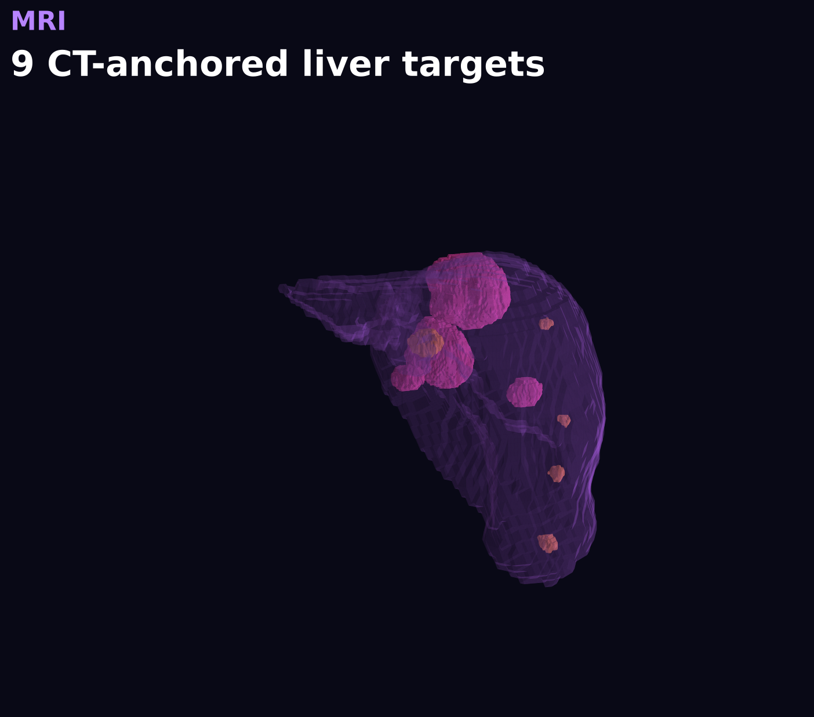
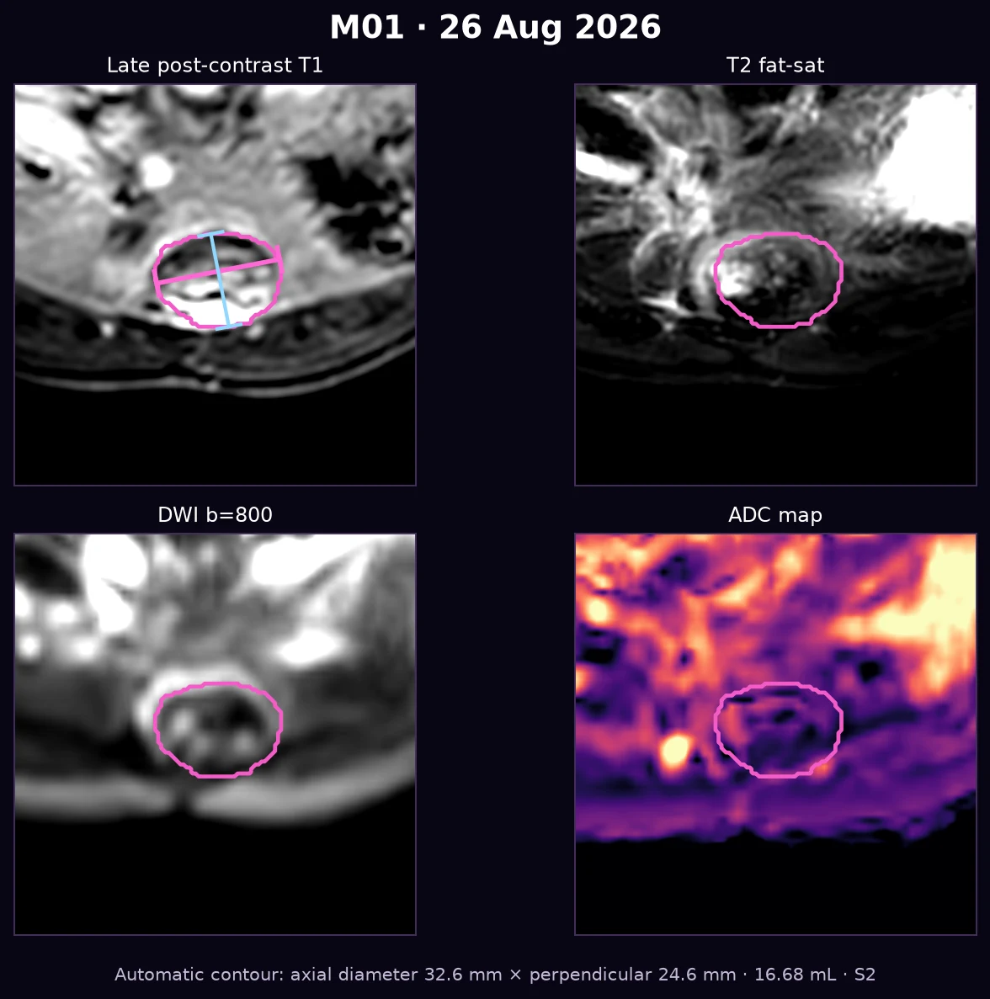

—
Multiparametric liver MRI · 18 Dec 2025 → 26 Aug 2026
See change beyond size alone.
Registered lesion tracking combines 3D morphology with ADC, high-b DWI, T2 fat-sat, late post-contrast signal, dynamic phase behavior, and independent repeat-AI validation.
Important: MRI signal ratios and activity proxies are exploratory. They are not a diagnosis of viable tumor or necrosis.

Latest automated burden—
MRI timeline
Choose any two MRI dates
The default comparison uses the first and latest available MRI.
→
Sequence provenance: the 26 Aug ZIP is truncated. Four complete dynamic phases and T2 are included; DWI/ADC and the separate axial late series are missing, so dynamic phase 4 is used for morphology and 3D. The 28 Apr ADC map was derived from the available b=0 and b=800 images rather than supplied as a scanner-generated ADC series.
At a glance
MRI disease-burden dashboard
All measurements come from automated 3D masks and require specialist verification.
—
Weak tiny-focus matches are not forced
Whole-mask Dice, December / January
What changed?
How to read the signals
ADC
Quantitative diffusion map in 10⁻³ mm²/s. Lower values can reflect restriction but are not specific for viable tumor.
DWI / liver & T2 / liver
Lesion signal divided by background liver to reduce—but not eliminate—scanner and sequence dependence.
Low late-signal fraction
An exploratory low-enhancement proxy. It must not be interpreted as a measured necrotic percentage.
What the longitudinal pattern suggests
Latest MRI · 26 Aug 2026
Interactive 3D lesion map
The model uses the latest complete axial dynamic phase available in the recovered August DICOM. Toggle Couinaud segment context without slowing the default view.
Loading MRI 3D model…
Lesion explorer
Multiparametric analysis per lesion
Cards update to the two selected dates. Open one for high-resolution panels and its full four-date trend.
MRI report package
Download or share the full report
Includes methodology, validation, registered lesion matching, high-resolution multiparametric comparisons, morphology, ADC/DWI/T2 features, dynamic signal ratios, and explicit limitations.

Clinical safety notice
This is a computer-assisted research visualization, not a radiologist-signed report, formal RECIST assessment, pathology result, or treatment recommendation. Lesion matching, segment assignment, ADC findings, enhancement proxies, and small foci require review on the original DICOM images by a qualified radiologist.